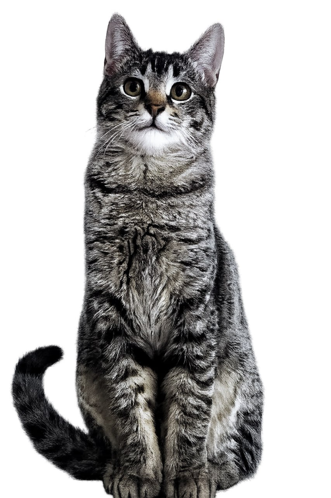
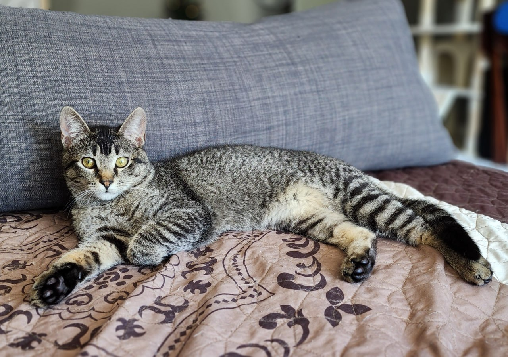
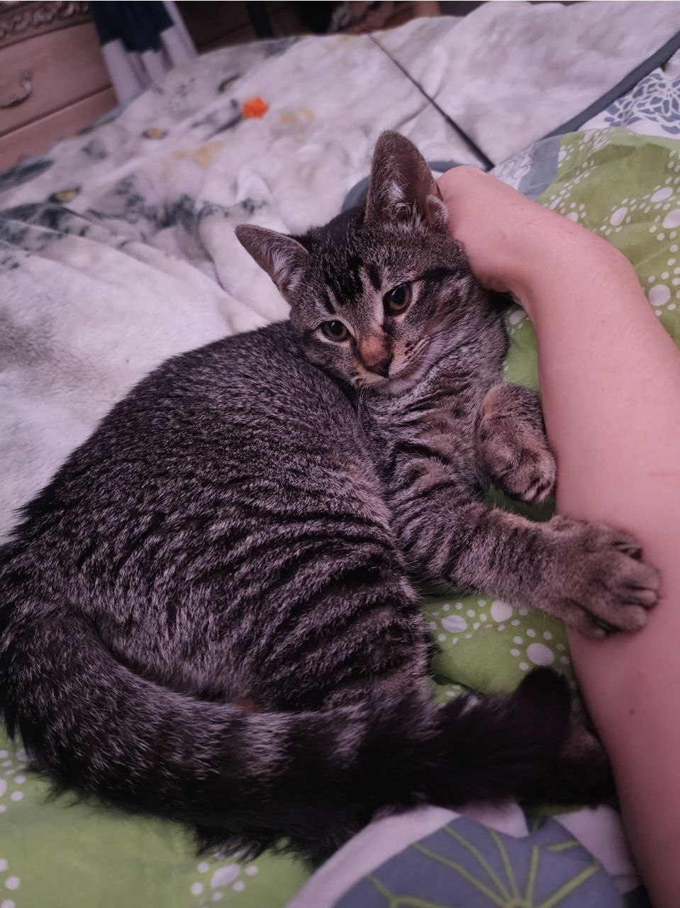
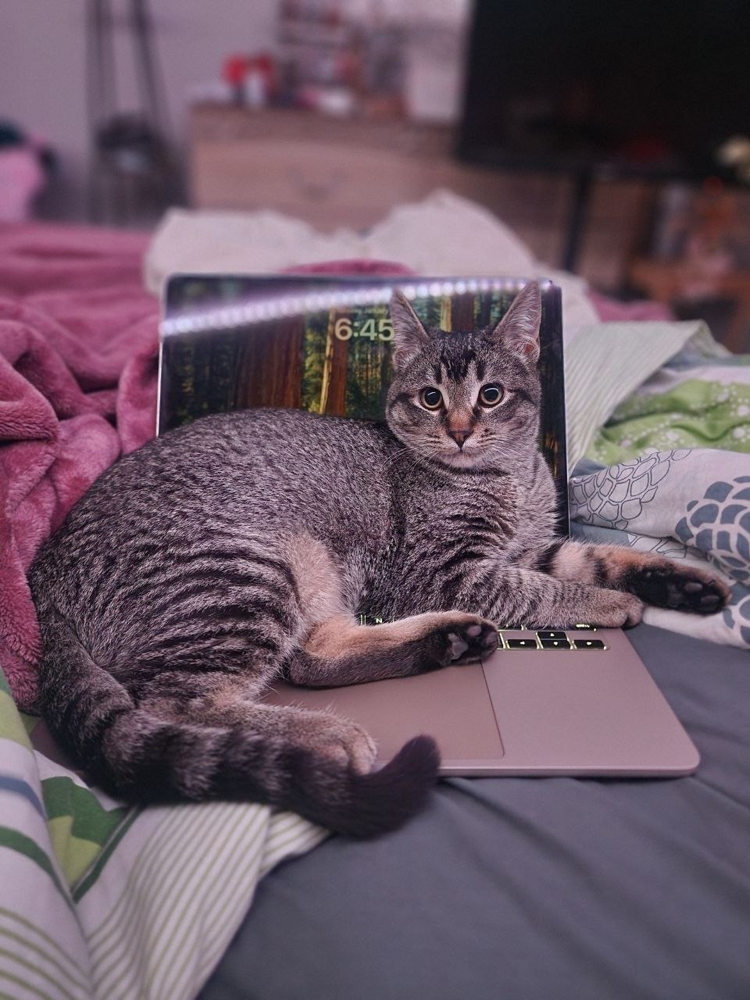
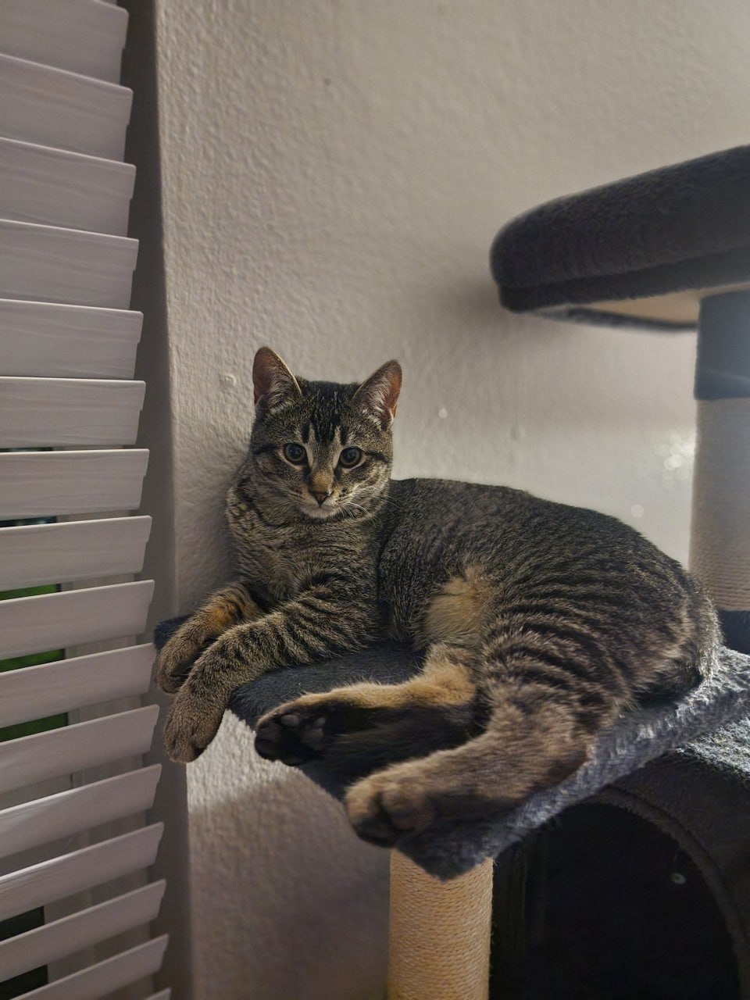
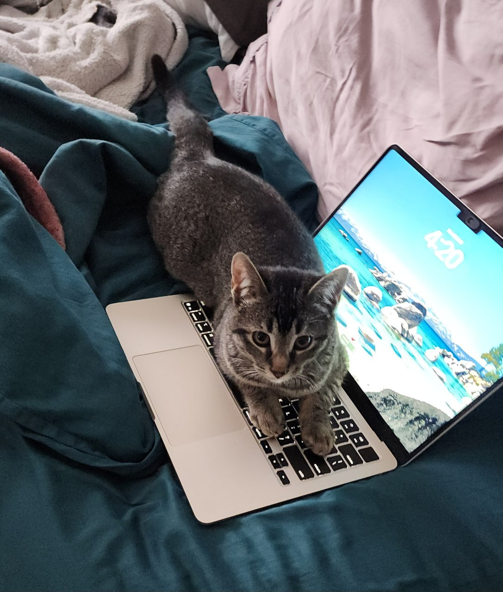
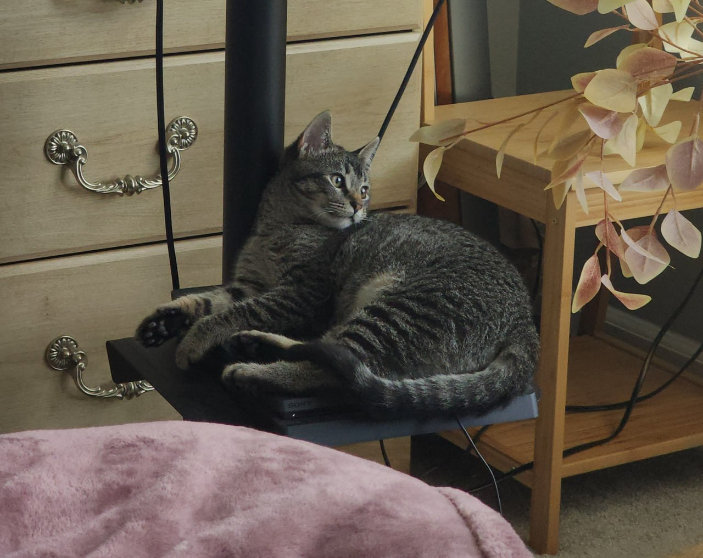
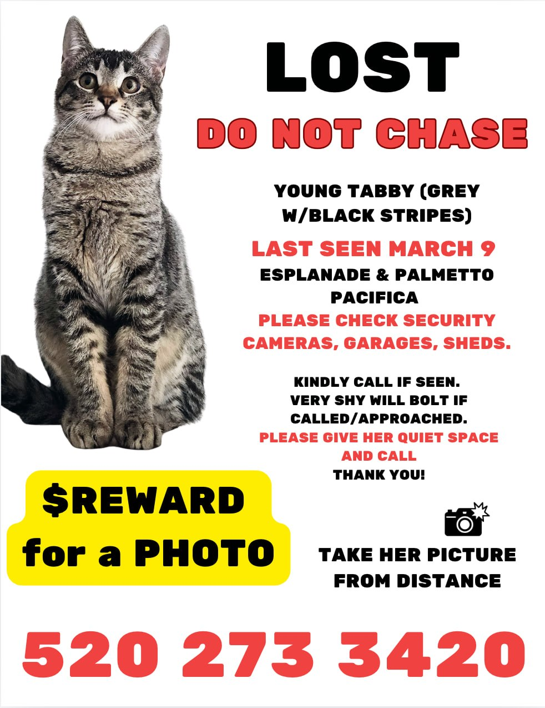

Lost in Pacifica, CA · March 4, 2026
📞 Call / Text 520-273-3420She could be anywhere within 1–1.5 miles of Oceanaire Apartments. Unlikely to cross the highway.
DO NOT chase or try to grab her — she WILL run.
If you think she is inside your house, shed, or garage — please don't let her out and call 520-273-3420 immediately.
Saw a cat that looks like Mini outside Pacifica? She may have traveled in someone's vehicle. Take a picture/video and call 520-273-3420.







